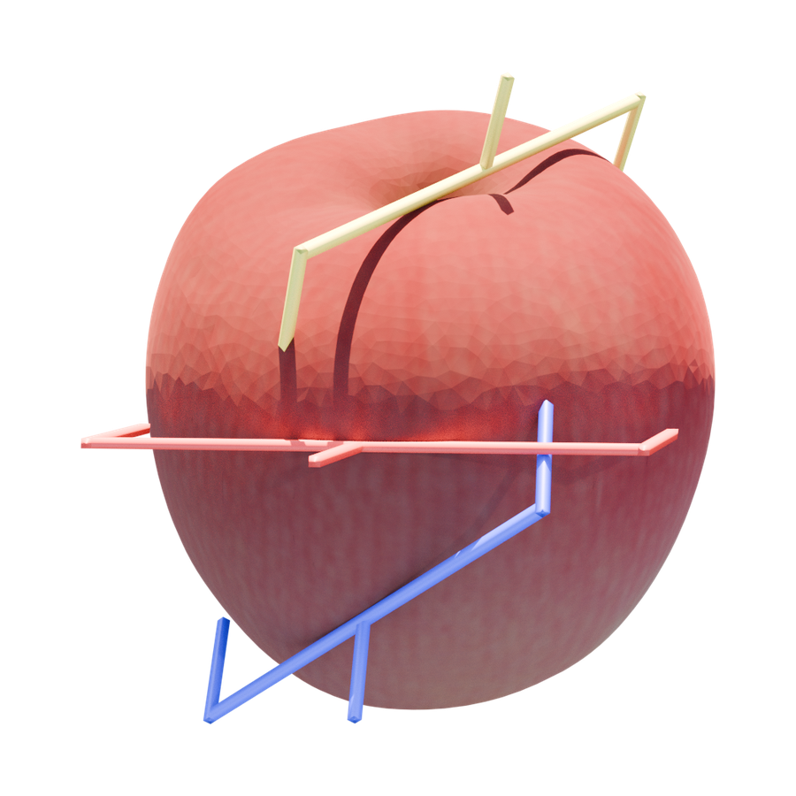
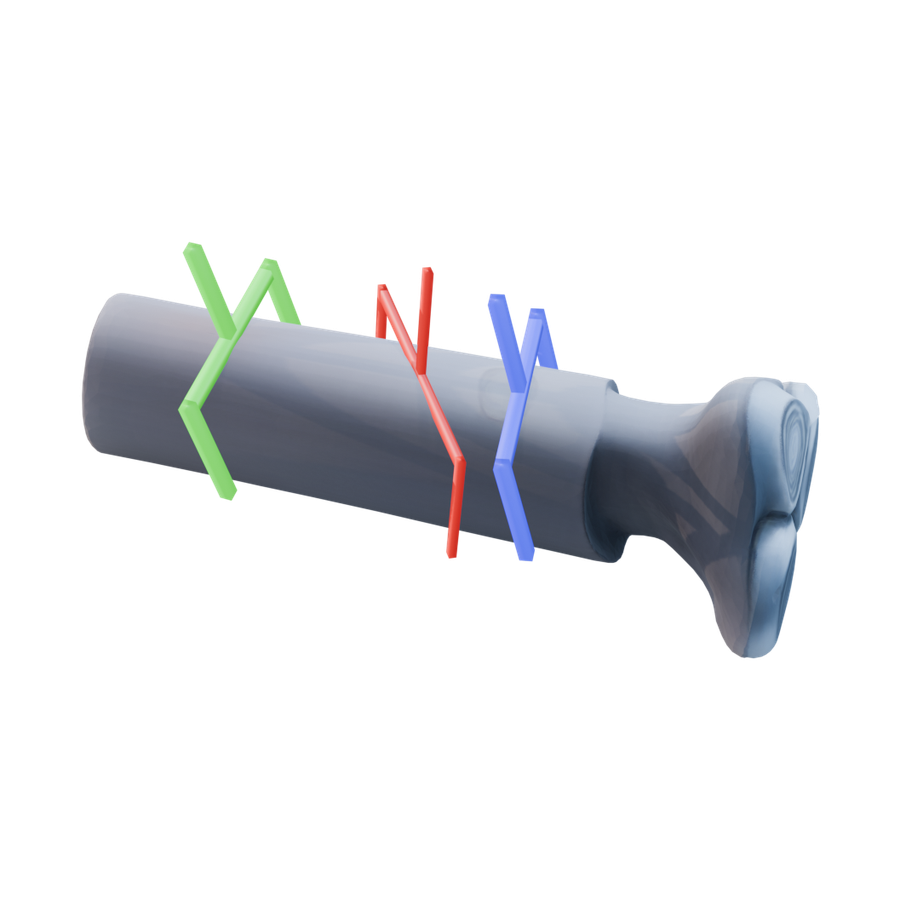
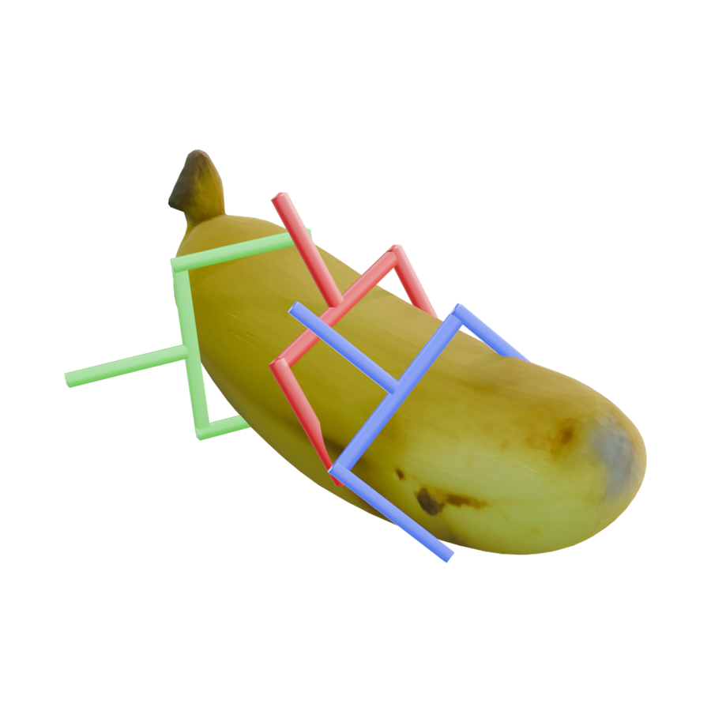
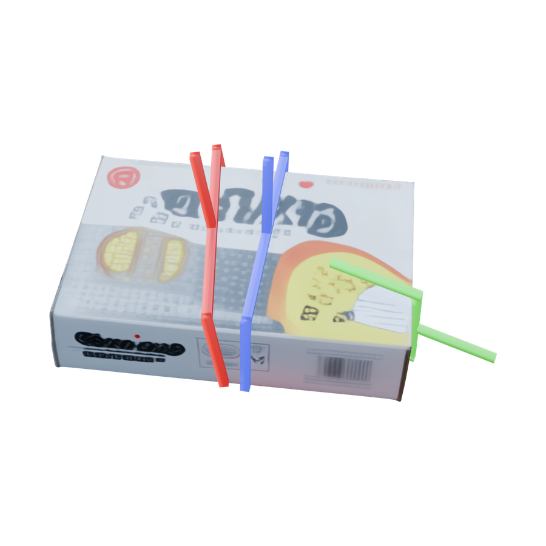
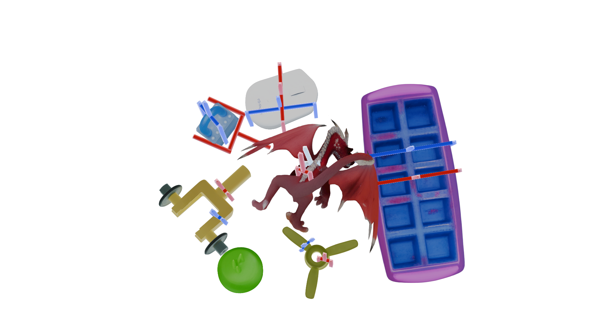
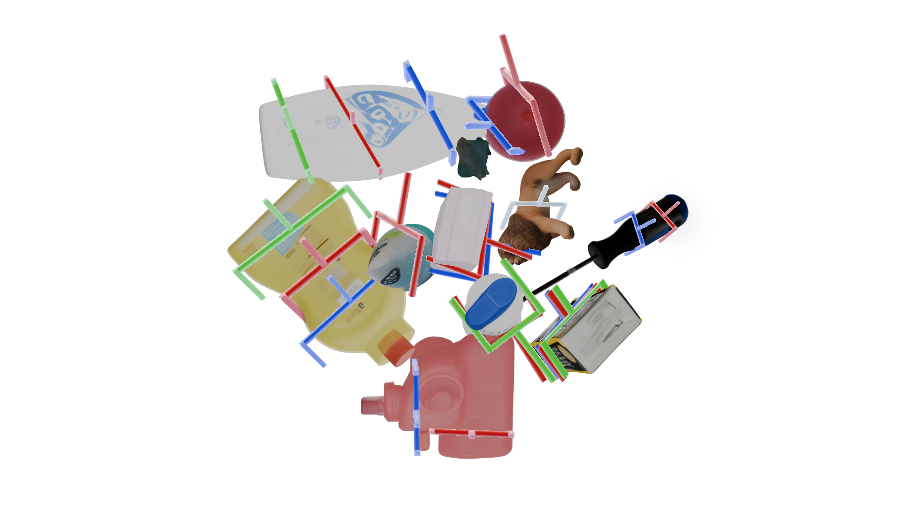
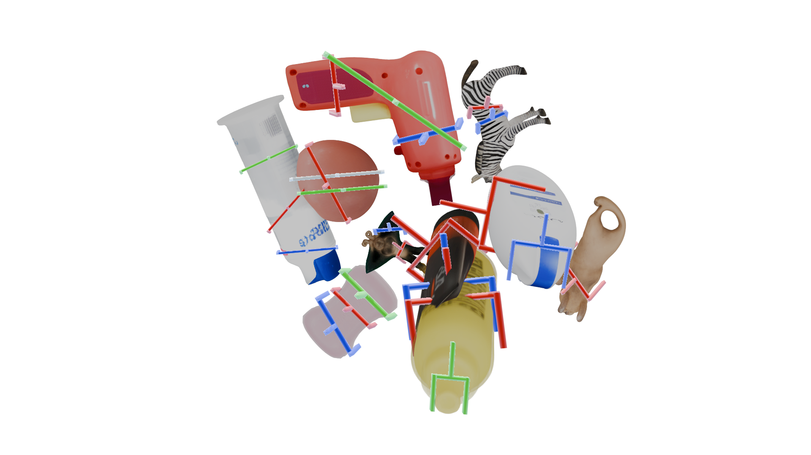
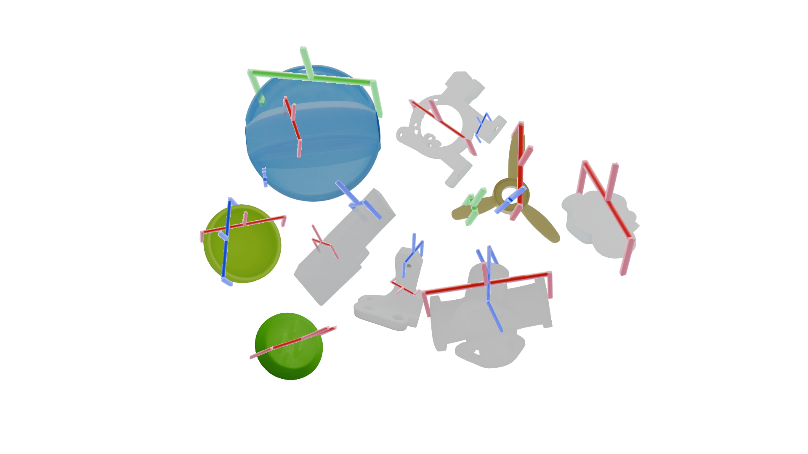

GraspFoM: Towards Reconstruction-Driven Robotic Grasping with 3D Foundation Priors

GraspFoM turns partial RGB-D observations into a shared 3D object latent, then uses that latent to jointly reconstruct high-fidelity 3D assets and generate continuous 6-DoF grasp poses.

Qualitative Results
Interactive 3D Pose Assets
Rotate and zoom the reconstructed object-pose assets directly in the browser.
Wine
Abstract
Robotic grasping remains challenging under partial observations because reliable grasping depends on both local contact cues and object-level 3D structure. Existing geometry-aware methods often use reconstruction as an intermediate prediction, leaving the geometry weakly coupled with grasp planning.
GraspFoM leverages 3D foundation priors from SAM3D to build a shared object latent for both reconstruction and grasp pose prediction. On top of this latent, it introduces anchor-initialized truncated diffusion for continuous multimodal 6-DoF grasp generation, together with a reconstruction-aware scorer and residual latent updater that connect grasp supervision back to object reconstruction.
Shared
3D object latent for reconstruction and grasping
6-DoF
continuous anchor-initialized grasp generation
Mesh + 3DGS
high-fidelity object asset reconstruction
SOTA
grasping and reconstruction performance
Foundation-Prior Object Latent
SAM3D priors provide object-centric point maps and compact shape latents that encode local surface geometry and global object structure from partial observations.
Anchor-Initialized Diffusion
Learned grasp anchors initialize truncated denoising in normalized pose space, avoiding discrete candidate enumeration while preserving multimodal grasp hypotheses.
Reconstruction-Aware Feedback
Point-wise scores aggregate grasp-relevant features for a lightweight residual updater, letting manipulation supervision refine the shared object latent without discarding geometry.
Results
State-of-the-Art Grasping and Reconstruction on GraspNet-1B
GraspFoM is evaluated on the official GraspNet-1Billion benchmark for grasp pose prediction and object-level 3D reconstruction. It is trained only on the official GraspNet-1B training split, while several unified baselines rely on additional pretraining or multi-view inputs.
Grasp Pose Prediction
AP, AP0.8, and AP0.4 are reported on Seen, Similar, and Novel splits. G and R indicate grasp and reconstruction outputs.
| Method | Output | Seen | Similar | Novel | |||||||
|---|---|---|---|---|---|---|---|---|---|---|---|
| G | R | AP | AP0.8 | AP0.4 | AP | AP0.8 | AP0.4 | AP | AP0.8 | AP0.4 | |
| GG-CNN | Yes | No | 15.48 | 21.84 | 10.25 | 13.26 | 18.37 | 4.62 | 5.52 | 5.93 | 1.86 |
| MultiObject MultiGrasp | Yes | No | 15.97 | 23.66 | 10.80 | 15.41 | 20.21 | 7.06 | 7.64 | 8.69 | 2.52 |
| CenterGrasp | Yes | Yes | 16.46 | 20.24 | 11.74 | 9.52 | 11.92 | 5.71 | 1.60 | 1.89 | 1.12 |
| GPD | Yes | No | 22.87 | 28.53 | 12.84 | 21.33 | 27.83 | 9.64 | 8.24 | 8.89 | 2.67 |
| PointNetGPD | Yes | No | 25.96 | 33.01 | 15.37 | 22.68 | 29.15 | 10.76 | 9.23 | 9.89 | 2.74 |
| GraspNet | Yes | No | 27.56 | 33.43 | 16.59 | 26.11 | 34.18 | 14.23 | 10.55 | 11.25 | 3.98 |
| GSNet | Yes | No | 67.12 | 78.46 | 60.90 | 54.81 | 66.72 | 46.17 | 24.31 | 30.52 | 14.23 |
| Scale-Balanced Grasp | Yes | No | 63.83 | 74.25 | 58.66 | 58.46 | 70.05 | 51.32 | 24.63 | 31.05 | 12.85 |
| HGGD | Yes | No | 64.45 | 72.81 | 61.16 | 53.59 | 64.12 | 45.91 | 24.59 | 30.46 | 15.58 |
| EconomicGrasp | Yes | No | 68.21 | 79.60 | 63.54 | 61.19 | 73.60 | 53.77 | 25.48 | 31.46 | 13.85 |
| MG-Grasp | Yes | Yes | 66.80 | - | - | 57.35 | - | - | 23.22 | - | - |
| ZeroGrasp | Yes | Yes | 72.43 | 83.12 | 65.57 | 65.45 | 78.32 | 55.48 | 28.49 | 34.21 | 15.80 |
| GraspFoM | Yes | Yes | 78.87 | 89.60 | 71.13 | 73.34 | 87.84 | 64.12 | 54.32 | 64.01 | 29.36 |
3D Reconstruction
Geometry quality on GraspNet-1B using CD, F1-Score@10mm, and Normal Consistency.
| Method | Segmented | CD ↓ | F1 ↑ | NC ↑ |
|---|---|---|---|---|
| Minkowski | Yes | 6.84 | 81.45 | 77.89 |
| OCNN | Yes | 7.23 | 82.22 | 78.44 |
| OctMAE | No | 7.57 | 78.38 | 75.19 |
| ZeroGrasp | Yes | 6.05 | 84.08 | 78.46 |
| GraspFoM | Yes | 2.74 | 96.08 | 87.18 |
Qualitative Results
Visual Evidence Across Reconstruction, Scenes, and Pose Assets
GraspFoM predicts grasp poses together with object assets from the shared 3D latent. The examples below show reconstructed geometry, 6-DoF grasp visualizations, and scene-level outputs.

Benchmark Reconstruction and Grasp Pose Comparison
Compared with reconstruction-aware baselines, GraspFoM recovers more complete object geometry and produces grasp poses with more stable contact regions and approach directions.
Single-Object Reconstruction Renders
Object-level assets are arranged as an interactive result wall.




Scene-Level Composite Results
Scene examples are spread out for quick visual comparison across different object layouts.




Citation
BibTeX
@article{wu2026graspfom,
title={GraspFoM: Towards Reconstruction-Driven Robotic Grasping with 3D Foundation Priors},
author={Wu, Dongli and Wei, Xiaobao and Wang, Hao and Dong, Qiaochu and Li, Ying and Wuwu, Qingpo and Lu, Ming and Zhao, Wufan},
journal={arXiv preprint},
year={2026}
}